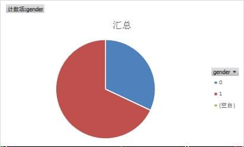
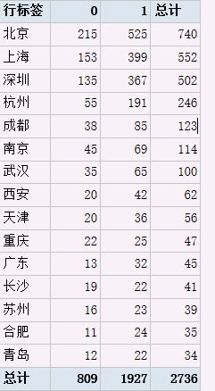
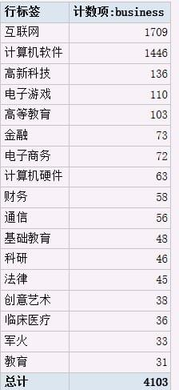

<!DOCTYPE html><html><head><meta name="generator" content="Hexo 3.9.0"><meta charset="utf-8"><title>怎么找到喜欢程序员的妹子做女友? | 高金的博客</title><meta name="viewport" content="width=device-width,initial-scale=1,maximum-scale=1"><meta name="description" content="知乎妹子 主要是看到知乎问题怎么找到喜欢程序员的妹子做女友?  然后抓取了关注这几个问题的所有人，大概9000+  性别是看是这样的（果然僧多肉少…  分居住地来看是这样的，汉子永远大于妹子。。。 （因为知乎对居住地没有规范，所以数据比较乱，上面是大概清洗过的。。。）  竟然还有人填床上，也是666   分行业来说，大概是这样，可以看到基本上都是互联网相关的行业   原答案在这https://ww"><meta property="og:type" content="website"><meta property="og:title" content="怎么找到喜欢程序员的妹子做女友?"><meta property="og:url" content="https://igaojin.me/lab/怎么找到喜欢程序员的妹子做女友.html"><meta property="og:site_name" content="高金的博客"><meta property="og:description" content="知乎妹子 主要是看到知乎问题怎么找到喜欢程序员的妹子做女友?  然后抓取了关注这几个问题的所有人，大概9000+  性别是看是这样的（果然僧多肉少…  分居住地来看是这样的，汉子永远大于妹子。。。 （因为知乎对居住地没有规范，所以数据比较乱，上面是大概清洗过的。。。）  竟然还有人填床上，也是666   分行业来说，大概是这样，可以看到基本上都是互联网相关的行业   原答案在这https://ww"><meta property="og:locale" content="zh-CN"><meta property="og:image" content="https://igaojin.me/lab/怎么找到喜欢程序员的妹子做女友/0.jpg"><meta property="og:image" content="https://igaojin.me/lab/怎么找到喜欢程序员的妹子做女友/1.jpg"><meta property="og:image" content="https://igaojin.me/lab/怎么找到喜欢程序员的妹子做女友/2.jpg"><meta property="og:image" content="https://igaojin.me/lab/怎么找到喜欢程序员的妹子做女友/3.jpg"><meta property="og:updated_time" content="2019-11-23T15:34:57.888Z"><meta name="twitter:card" content="summary"><meta name="twitter:title" content="怎么找到喜欢程序员的妹子做女友?"><meta name="twitter:description" content="知乎妹子 主要是看到知乎问题怎么找到喜欢程序员的妹子做女友?  然后抓取了关注这几个问题的所有人，大概9000+  性别是看是这样的（果然僧多肉少…  分居住地来看是这样的，汉子永远大于妹子。。。 （因为知乎对居住地没有规范，所以数据比较乱，上面是大概清洗过的。。。）  竟然还有人填床上，也是666   分行业来说，大概是这样，可以看到基本上都是互联网相关的行业   原答案在这https://ww"><meta name="twitter:image" content="https://igaojin.me/lab/怎么找到喜欢程序员的妹子做女友/0.jpg"><link rel="alternate" href="/atom.xml" title="高金的博客" type="application/atom+xml"><link rel="icon" href="/favicon.ico"><link rel="stylesheet" href="//cdn.jsdelivr.net/npm/mycdn@2.0.0/static/css/style.min.css"><script type="text/javascript">!function(e,a,t,n,g,c,o){e.GoogleAnalyticsObject="ga",e.ga=e.ga||function(){(e.ga.q=e.ga.q||[]).push(arguments)},e.ga.l=1*new Date,c=a.createElement(t),o=a.getElementsByTagName(t)[0],c.async=1,c.src="//www.google-analytics.com/analytics.js",o.parentNode.insertBefore(c,o)}(window,document,"script"),ga("create","UA-113457160-1","auto"),ga("send","pageview")</script><script async src="https://rum.perfops.net/rum3.min.js"></script></head></html><body><div id="container"><div id="wrap"><header id="header"><div id="banner"></div><div id="header-outer" class="outer"><div id="header-inner" class="inner"><nav id="sub-nav"><a id="nav-rss-link" class="nav-icon" href="/atom.xml" title="RSS Feed"></a> <a id="nav-search-btn" class="nav-icon" title="搜索"></a></nav><div id="search-form-wrap"><form action="//google.com/search" method="get" accept-charset="UTF-8" class="search-form"><input type="search" name="q" class="search-form-input" placeholder="Search"><button type="submit" class="search-form-submit">&#xF002;</button><input type="hidden" name="sitesearch" value="https://igaojin.me"></form></div><nav id="main-nav"><a id="main-nav-toggle" class="nav-icon"></a> <a class="main-nav-link" href="/">首页</a> <a class="main-nav-link" href="/archives">归档</a> <a class="main-nav-link" href="/about">关于我</a> <a class="main-nav-link" href="/lab/">实验室</a> <a class="main-nav-link" href="/buy-me-a-coffee/">赞赏</a></nav></div><div id="header-title" class="inner"><h1 id="logo-wrap"><a href="/" id="logo">高金的博客</a></h1></div></div></header><div class="outer"><section id="main"><article id="page-undefined" class="article article-type-page" itemscope="" itemprop="blogPost"><div class="article-meta"><a href="/lab/怎么找到喜欢程序员的妹子做女友.html" class="article-date"><time datetime="2018-02-04T05:36:26.000Z" itemprop="datePublished">2018-02-04</time></a></div><div class="article-inner"><header class="article-header"><h1 class="article-title" itemprop="name">怎么找到喜欢程序员的妹子做女友?</h1></header><div class="article-entry" itemprop="articleBody"><h3 id="知乎妹子"><a href="#知乎妹子" class="headerlink" title="知乎妹子"></a>知乎妹子</h3><p>主要是看到知乎问题<a href="https://www.zhihu.com/question/66249920" rel="external nofollow noopener noreferrer" target="_blank">怎么找到喜欢程序员的妹子做女友?</a></p><p>然后抓取了关注这几个问题的所有人，大概9000+</p><p>性别是看是这样的（果然僧多肉少…<br><br>分居住地来看是这样的，汉子永远大于妹子。。。<br>（因为知乎对居住地没有规范，所以数据比较乱，上面是大概清洗过的。。。）</p><p>竟然还有人填床上，也是666<br></p><p>分行业来说，大概是这样，可以看到基本上都是互联网相关的行业<br></p><p>原答案在这<a href="https://www.zhihu.com/question/66249920/answer/307505634" rel="external nofollow noopener noreferrer" target="_blank">https://www.zhihu.com/question/66249920/answer/307505634</a></p><p>做了一个简单的展示和筛选的妹子的网站 <a href="zhihu">知乎妹子</a></p><p>最后，还弄了一个微信群(知乎交友群),欢迎程序员以及对程序员感兴趣的妹子or汉子加群~</p><p></p></div><footer class="article-footer"><a data-url="https://igaojin.me/lab/怎么找到喜欢程序员的妹子做女友.html" data-id="ck3mph3e200259kypjrwql93i" class="article-share-link">分享</a></footer></div><script src="https://cdn.bootcss.com/jquery/2.0.3/jquery.min.js"></script><div id="random_posts"><h2>推荐文章</h2><div class="random_posts_ul"><script>var random_count=4,site={BASE_URI:"/"};function load_random_posts(t){var s=site.posts;if(t){for(var o,r,a=s.length;a;o=Math.floor(Math.random()*a),r=s[--a],s[a]=s[o],s[o]=r);s=s.slice(0,random_count);for(var e="<ul>",n=0;n<s.length;n++){var i=s[n];e+="<li><strong>"+i.date+':&nbsp;&nbsp;<a href="'+(site.BASE_URI+i.uri)+'">'+(i.title||i.uri)+"</a></strong>",i.excerpt&&(e+='<div class="post-excerpt">'+i.excerpt+"</div>"),e+="</li>"}$(t).html(e+"</ul>")}}$(".random_posts_ul").each(function(){var s=this;site.posts&&site.posts.length?load_random_posts(s):$.getJSON(site.BASE_URI+"js/posts.js",function(t){site.posts=t,load_random_posts(s)})})</script></div></div></article><div class="comments" id="comments"><div id="gitment_comments"></div></div></section><aside id="sidebar"><div class="widget-wrap"><div class="widget" id="toc-widget-fixed"><strong class="toc-title">文章目录</strong><div class="toc-widget-list"><ol class="toc"><li class="toc-item toc-level-3"><a class="toc-link" href="#知乎妹子"><span class="toc-number">1.</span> <span class="toc-text">知乎妹子</span></a></li></ol></div></div></div></aside></div><footer id="footer"><div class="outer"><div id="footer-left">&copy; 2014 - 2019 Gao JIn&nbsp;|&nbsp; 主题 <a href="https://github.com/giscafer/hexo-theme-cafe/" target="_blank" rel="external nofollow noopener noreferrer">Cafe</a></div><div id="footer-right">联系方式&nbsp;|&nbsp; i@igaojin.me</div></div></footer><script src="//cdn.bootcss.com/jquery/2.0.3/jquery.min.js"></script></div><nav id="mobile-nav"><a href="/" class="mobile-nav-link">首页</a> <a href="/archives" class="mobile-nav-link">归档</a> <a href="/about" class="mobile-nav-link">关于我</a> <a href="/lab/" class="mobile-nav-link">实验室</a> <a href="/buy-me-a-coffee/" class="mobile-nav-link">赞赏</a></nav><script>window.onload=function(){new Elevator({selector:".back-to-top-btn",element:document.querySelector(".back-to-top-btn"),duration:1e3})}</script><link rel="stylesheet" href="//cdn.jsdelivr.net/npm/gitment@0.0.3/style/default.css"><script src="//cdn.jsdelivr.net/npm/gitment@0.0.3/dist/gitment.browser.js"></script><script>var gitment=new Gitment({id:"Sun Feb 04 2018 13:36:26 GMT+0800",owner:"jin10086",repo:"jin10086.github.io",oauth:{client_id:"935e92a5333436856348",client_secret:"e655566eaf920d216ec6283978d67874bf0850a6"}});gitment.render(document.getElementById("gitment_comments"))</script><script src="//cdn.jsdelivr.net/npm/mycdn@2.0.0/static/js/is.js"></script><link rel="stylesheet" href="//cdnjs.cloudflare.com/ajax/libs/fancybox/2.1.5/jquery.fancybox.min.css"><script src="//cdnjs.cloudflare.com/ajax/libs/fancybox/2.1.5/jquery.fancybox.pack.js"></script><script src="//cdn.jsdelivr.net/npm/mycdn@2.0.0/static/js/script.js"></script><script src="//cdn.jsdelivr.net/npm/mycdn@2.0.0/static/js/elevator.js"></script></div></body>